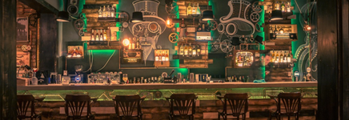

Werkküche – Kitchen Club

Der Kitchenclub ist ein sozialer Community-Marktplatz auf dem Menschen aus der ganzen Welt in der Stadt Winterthur regionale und einzigartige Küchen entdecken und erleben können. Ob Singles, Familien, Studenten oder Wohngemeinschaften alle Menschen aus der Stadt Winterthur, können über die eigens dafür gebildete Plattform Ihre Küche anbieten und Ihre Gäste bekochen und verwöhnen. Der Kitchenclub soll den kulturellen und sozialen Austausch in Winterthur fördern und mitgestalten. Über die Internetplattform kann man sich die Küchen anschauen, buchen und anschliessend bewerten. Der Vorteil für unsere Gäste ist, dass sie sich einerseits mit der Lokalen Bevölkerung austauschen können und sich Ihnen gleichzeitig die Möglichkeit bietet sich zu Verpflegen bei der lokalen Bevölkerung zu verpflegen.